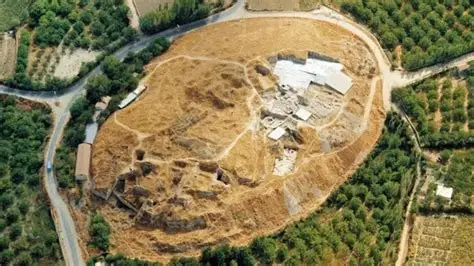
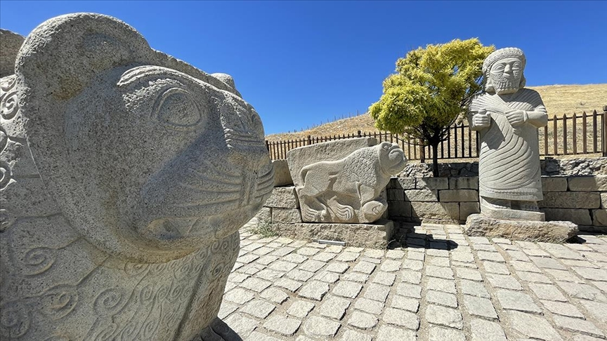

Arslantepe: Uygarlığın Doğduğu Topraklar


Malatya Ovası'nda yer alan Arslantepe, Yakın Doğu'nun en büyük höyüklerinden biridir. Burası sıradan bir yerleşim yeri değil, insanlığın avcı-toplayıcılıktan yerleşik hayata geçişinden sonra kurduğu ilk merkezi devlet yapısının somut bir örneğidir.
Arslantepe’de bulunan tapınaklar ve saray kompleksi, dini gücün yerini siyasi ve idari güce bıraktığı bir geçiş dönemini temsil eder.
2021 yılında UNESCO tarafından tescillenen alan, "Evrensel Değer" taşımaktadır:
Höyük üzerinde yapılan çalışmalar, Geç Kalkolitik Dönem'den Demir Çağı'na kadar uzanan katmanları ortaya koymuştur. Özellikle Geç Hitit dönemine ait aslan heykelleri ve kabartmalarla süslü kapı girişi (Aslanlı Kapı), şehrin sanatsal becerisini yansıtmaktadır.